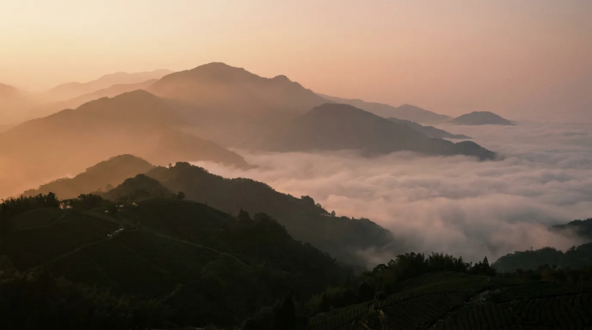
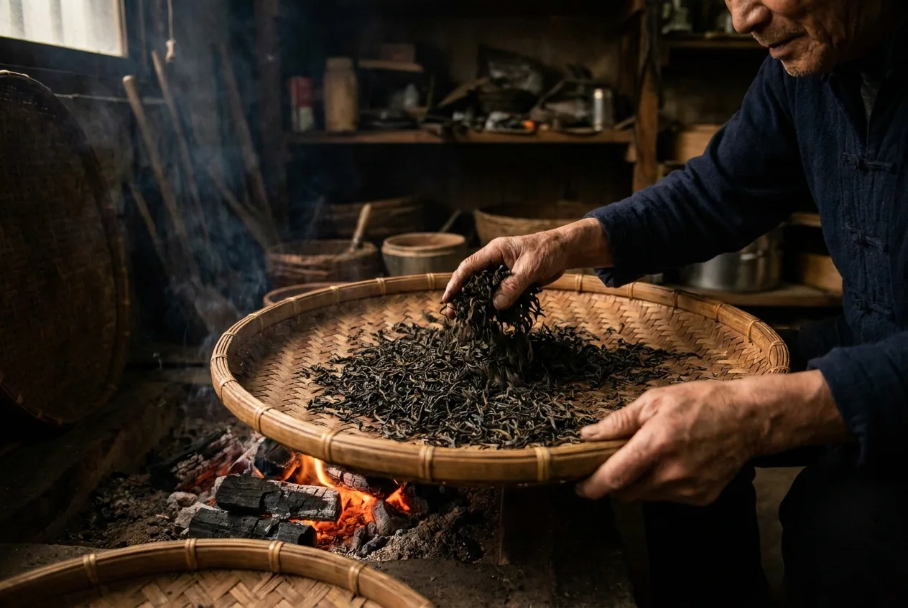

茶山故事 · Our Story
為了一片乾淨的葉子,
我們上山了十年
霧森始於一個簡單的念頭——把高山上最動人的那股清香，完整地帶到你的杯子裡。
起源 · Origin
從一杯走味的茶
開始的執念
2016 年，創辦人在一次梨山的旅途中，喝到一杯剛焙好的高山烏龍。那股冷冽又甘甜的山頭氣，和市面上多數的茶截然不同。回到城市後，他遍尋不著同樣的味道——好茶，往往在運送與久放之間悄悄走味。
於是霧森成立了。我們決定縮短茶葉從山上到茶杯的距離:與單一產區茶農契作，當季手採、當日萎凋、職人焙火，再以充氮封罐鎖住香氣。沒有複雜的故事，只有對「新鮮」與「乾淨」近乎固執的堅持。

海拔之上，雲海之巔三座高山 · Three Origins
每一座山，都有自己的脾氣
梨山 · 2,000m
台灣海拔最高茶區之一。終年低溫雲霧，茶湯冷甜、山頭氣強勁，是霧森的招牌風骨。
阿里山 · 1,600m
日照充足、雲霧調和。茶性清揚柔順，花香明亮，金萱更帶天然奶香，最受初心者喜愛。
杉林溪 · 1,700m
森林環抱、水氣豐沛。茶湯蜜綠甘潤、層次飽滿，尾韻乾淨，耐沖泡而厚實。

炭火 · 定香製茶工藝 · The Craft
時間，是最好的
製茶師
高山茶的迷人之處，在於急不得。從鮮葉到封罐，每一步都需要等待與判斷。我們的製茶師守著三代傳下來的手感，用鼻子聞、用手翻，讓每一批茶找到屬於它的那一把火。
晨霧手採
趁露水未乾、雲霧仍在時手採一心二葉，保留最飽滿的葉質與香氣前驅物。
日光萎凋
當日攤曬走水，輕柔翻動，喚醒茶葉內在的花果芬芳，奠定香氣基底。
炭火慢焙
以龍眼木炭低溫長焙，收斂菁味、轉化甜韻，層層堆疊出厚實的山頭氣。
退火封藏
焙後靜置退火，待香氣安定圓融，再充氮封罐，鎖住下山時的那口清香。
製茶人 · The Maker
守著一爐火的人
「焙茶這件事，機器永遠取代不了鼻子。」霧森的首席製茶師林師傅，從十六歲跟著父親學焙茶，至今已逾三十年。每到製茶季，他常守在焙籠旁整夜——因為火候差一分，茶的尾韻就少一層。
他常說，茶是活的，會隨天氣、隨海拔、隨採摘的那個早晨而改變。製茶師要做的，不是控制它，而是順著它的脾氣，把它最好的一面引出來。
火候差一分,
茶的尾韻就少一層